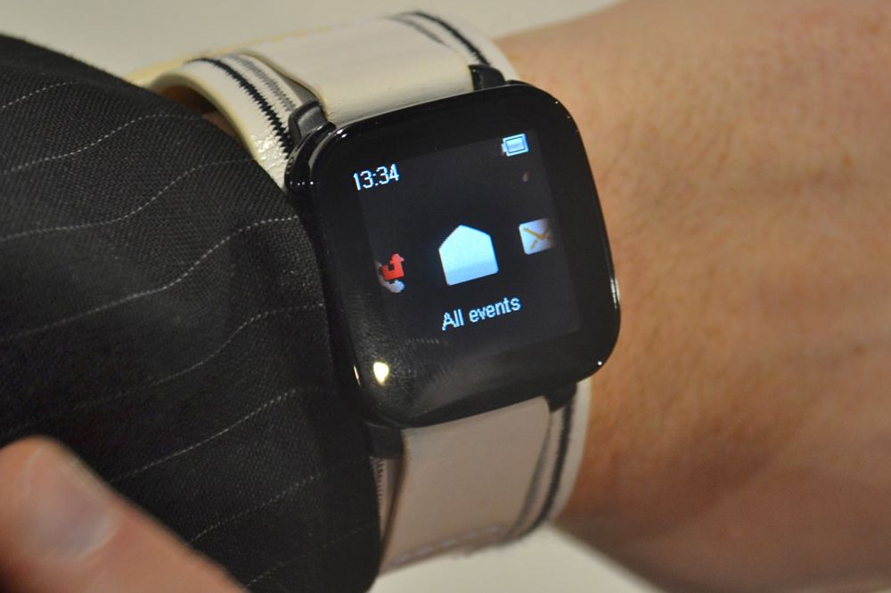
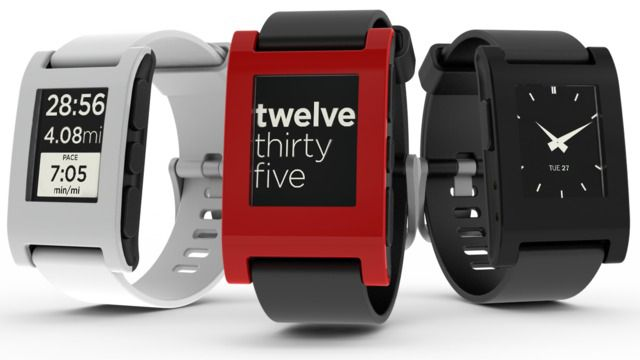
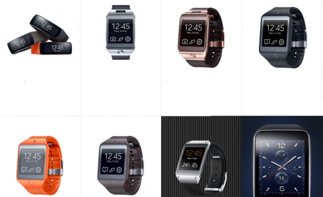
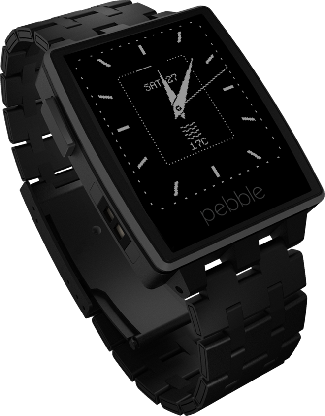

2010 Sony Ericsson LiveView

2012 Pebble Watch(Original/Steel)

2013 Samsung Galaxy Gear

Vertreter und deren Technik
Innenleben
- TI OMAP 3 SoC
- 1GHz Cortex A8
- 512MB RAM
- 4GB Flash
- 320x290 LCD(205ppi)
- Pedometer, Pulsmesser, Umgebungslichtsensor, Dual-Mikrofone
- Wireless Charging Chip
Innenleben - 1
-
S1 - "System in Package"(SiP)
Memory, Storage, Wireless, Sensores, I/O in a single package
- "APL 0778" CPU (Taktrate???)
- 512MB RAM
- 8GB Flash
Innenleben - 2
- Wireless Charging Chip
- NFC
- 272x340 Retina AMOLED Screen(290ppi)
- bzw. 312x390 Retina AMOLED Screen(302ppi)
- Pulsmesser
Innenleben - 1
- Snapdragon 400 SoC
- CPU 1GHz DualCore Krait 200
- 521MB RAM
- 4GB Flash
Innenleben - 2
- 360x480 Curved Super AMOLED (~300ppi)
- Accelerometer, Gyroskop
- Compass, Barometer
- Pulsmesser, Umgebungslichtsensor, UV-Sensor
Pebble Time,Original und Steel
Pebble Original Steel
Innenleben - 1
- ARM Cortex-M3, up to 80 MHz with 512 KB (Pebble Orig/Steel)
- ARM Cortex-M4, up to 100 MHz(Pebble Time)
- 144x168(176ppi) E-Ink-Display - monochrome (Pebble Orig/Steel)
- 144x168(176ppi) E-Ink-Display - multi color(Pebble Time)
Innenleben - 2
- 512kB ROM
- 128kB RAM
- 130mAh Battery(Orig/Steel)
- 150mAh Battery(Time)
- Akkulaufzeit ca. 1 Woche
Akkus(AndroidWear + iOS)
- immer noch zu groß
- noch keine serienreifen Akkus,
die in Armbänder integriert werden können
- zu geringe Kapazität
Armbänder
- kontinuierliches Messen des Blutzuckers
- Aufladen durch Bewegung
- Armband = Akku
- Diebstahlschutz